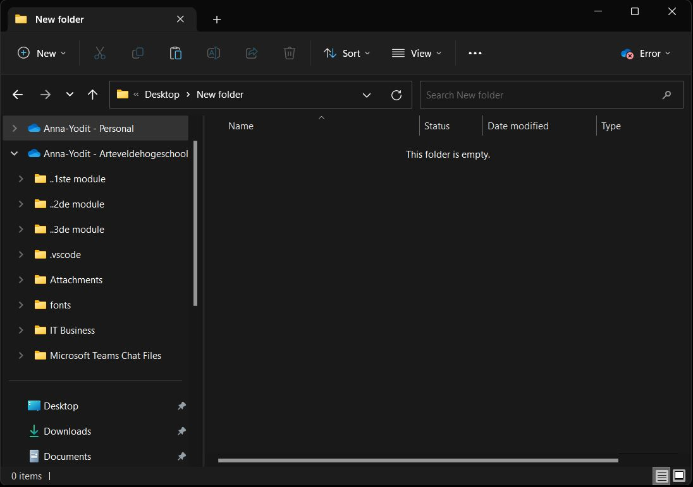

Nodige codetalen:
- HTML
- CSS
- JavaScript
Het lijkt misschien moelijk maar het is best wel nog envoudig!
Laten wij beginnen!
Stap 1 - Mappen structuur
Wij hebben "Visual Studio Code" gebruikt als code-editor maar jullie kunnen ook andere zoals "SublimeText", "Atom" en of andere gebruiken.
- Maak een map op uw bureaublad of door jou gewenste plaats met het naam "mathtravel". 
- Daarna doe je het map "mathtravel" open met uw code-editor.
- Bouw de volgende mappen- en bestandenstructuur aan:
- Start de live server door rechtsonder "Go Live" balk te klikken om jouw server pagina te bekijken.
Uw standaard browser zal nu gestart worden en je zal een blanco webpagina zien!
Eerste stap is gelukt! Je bent echt goed bezig!
Stap 2 - HTML & CSS
Tijd om met deze koppel te coderen. Zonder hen zien wij niets op onze webpagina!
- Kopeer onderstaande code in uw "game.html". Bewaar vervolgens dat bestand "CMND/CNTRL + S".
- Kopieer onderstaande code in jouw "main.css" bestand. Bewaar vervolgens dat bestand.
- Bekijk het resultaat in de browser (de url is hoogstwaarschijnlijk: http://127.0.0.1:5500/).
Als alles goed is, ziet het er nu zo uit.
Dat is de structuur van onze Game pagina, het zal ons helpen om te werken in CSS en JavaScript
Dit bevat alle stijl die we later nodig zullen hebben voor de look & feel van onze app.
Stap 3 - JavaScript
JavaScript is onze hoofdrol speler zonder hem kunnen wij geen interactiviteit toevoegen aan onze website.
"Hello World!"
- Eers moeten wij onze "game.js" linken met onze html.
- Ga naar "game.js" en plak volgende in om te testen of uw html gelinkt is met jouw JS bestand.
script src="./scripts/game.js"> script
alert('Hello world')
Code pen van hello world
Als je de allert krijgt dan is het wel gelinkt en je kan de geplakte code weg doen om volgende in te plakken.
Met deze code kunnen wij random sommen genereren zodra wij met de oplossing kunnen de auto laten bewegen.
Wij declarelen onze data's.
Hier met deze code genereren wij random sommen.
Met deze functie laten wij de auto bewegen bij een correcte antwoord.